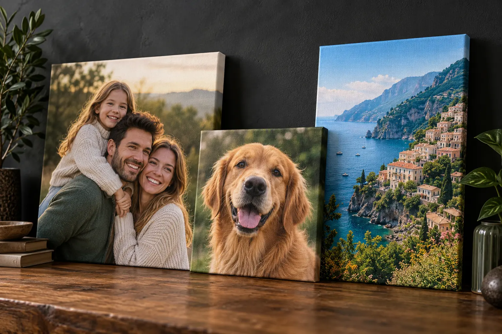

Familie & copii
Momente importante, portrete și amintiri transformate în decor personal.
Transformăm fotografia preferată într-un tablou canvas personalizat pentru casă, birou sau un cadou care chiar rămâne în memorie.
De la o singură fotografie până la un colaj complet, designul este pregătit pentru orientarea și dimensiunea tabloului.
Momente importante, portrete și amintiri transformate în decor personal.
Fotografii de la nuntă, aniversări, logodnă sau călătorii împreună.
Portrete cu animalul preferat, pregătite într-un stil curat și expresiv.
Automobile, motociclete, sport, muzică și orice pasiune vrei pe perete.
Locuri preferate, natură, orașe sau fotografii realizate în vacanță.
Mai multe fotografii organizate într-o singură compoziție echilibrată.

Un tablou canvas poate păstra o amintire importantă, poate completa atmosfera unei încăperi sau poate deveni un cadou creat special pentru persoana potrivită.
Folosește fotografia direct din telefon sau cameră, nu o captură de ecran și nu varianta descărcată dintr-o rețea socială. Astfel păstrăm cât mai multe detalii.
Analizăm calitatea, încadrarea și proporțiile. Dacă fotografia nu este potrivită pentru dimensiunea dorită, discutăm o variantă mai sigură.
Poza originală sau toate imaginile pe care le dorești într-un colaj.
Stabilim orientarea, dimensiunea și locul unde va fi amplasat tabloul.
Încadrăm fotografia, realizăm colajul și verificăm compoziția.
După confirmarea machetei stabilim finisarea și detaliile comenzii.
Trimite poza pe WhatsApp și spune-ne ce dimensiune aproximativă dorești. Dacă vrei un colaj, trimite toate imaginile și ideea ta.
Oferta se stabilește în funcție de dimensiune, numărul fotografiilor, design și finisare. Nu sunt afișate prețuri fixe.